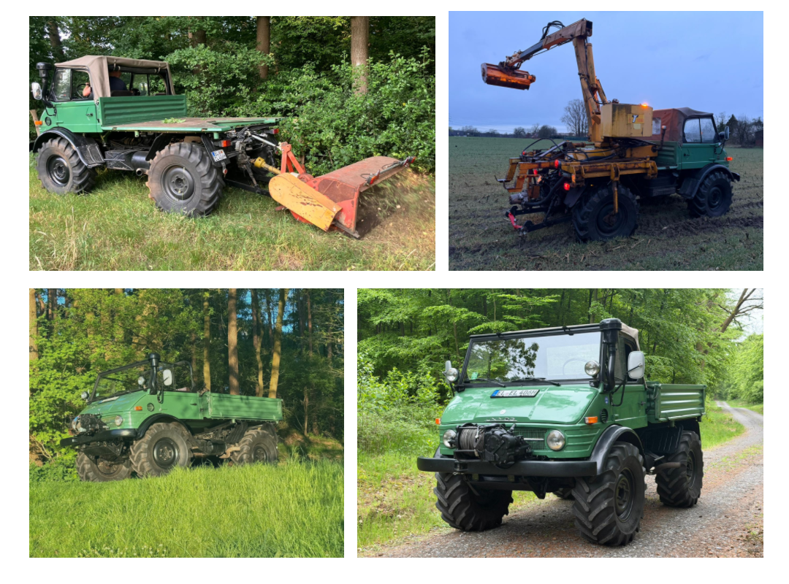

Dieser Unimog 406 Cabrio aus dem Baujahr 1975 ist ein klassischer Vertreter der 406er‑Baureihe mit offenem Fahrerhaus. Als Oldtimer wird er heute vor allem für Ausfahrten, Treffen und Veranstaltungen der UVC Regionalgruppe Emsland–Osnabrück genutzt.
← Zurück zur Übersicht